JCI / internationale Klinikstandards
Ein Signal für strukturierte Patientensicherheit, Hygiene, klinische Abläufe und dokumentierte Prozesse.
Hermest Hair Clinic Istanbul
Informieren Sie sich über die verfügbaren Methoden, den Ablauf in Istanbul, enthaltene Leistungen und mögliche Kosten. Welche Behandlung und Graftzahl medizinisch sinnvoll sind, lässt sich erst nach einer individuellen Haaranalyse beurteilen.
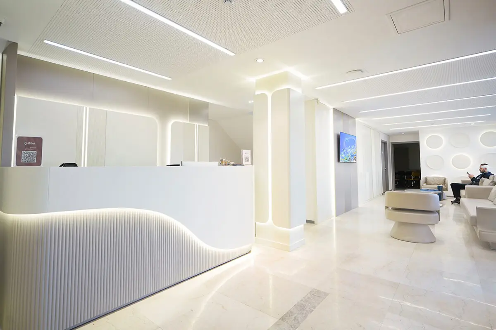
Kurz zusammengefasst
* Erfahrungswert aus ärztlichen Nachkontrollen; individuelle Ergebnisse variieren je nach Ausgangslage, Spenderqualität und Heilungsverlauf.
Klinikstandards
Die Nachweise betreffen Klinikorganisation, Prozesse und Teamstruktur. Die medizinische Eignung klären wir in der Haaranalyse.
Ein Signal für strukturierte Patientensicherheit, Hygiene, klinische Abläufe und dokumentierte Prozesse.
ISO steht für nachvollziehbare Organisation: Zuständigkeiten, Dokumentation, wiederholbare Abläufe und interne Qualitätskontrolle.
Das TÜV-Zeichen steht für geprüfte Bereiche und klare Kontrollkriterien. Relevant sind Umfang und Aktualität des jeweiligen Nachweises.
Gültig für Türkiye von Mai 2026 bis Mai 2027. Der Nachweis steht für Teamkultur, Organisation und Mitarbeiterbindung.
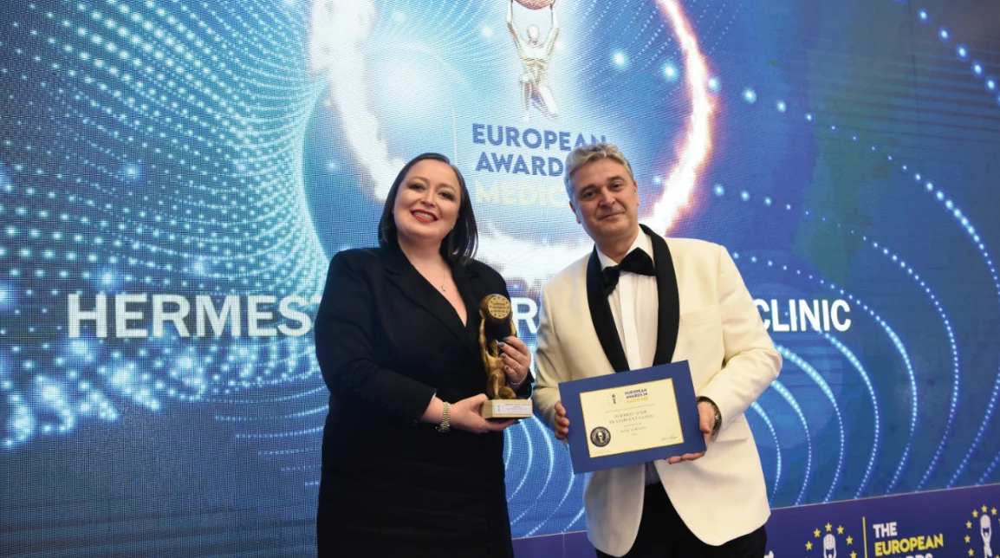
Die Jury zeichnete die Hermest Haarklinik in der Kategorie Haartransplantationschirurgie aus – bewertet wurden das „All in Safety"-Protokoll mit kardiologischer Echtzeit-Überwachung sowie eine dokumentierte Graft-Survival-Rate von 98–99 %.
Entscheidungsgrundlagen
Ärztliche Erfahrung, individuelle Planung, passende Technik und strukturierte Nachsorge bilden die Grundlage.
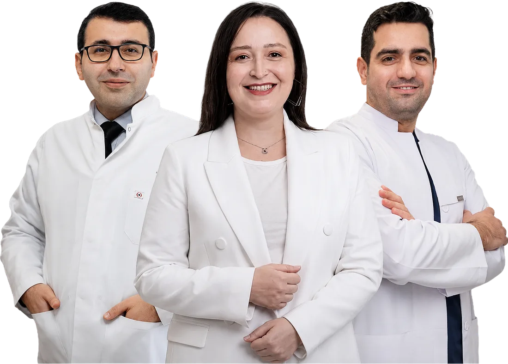
Ein eingespieltes Team aus Chirurgen, Dermatologen und Spezialisten für Haaranalyse plant und begleitet jede Behandlung.
Methode, Haarlinie und Graftzahl entstehen aus Fotoanalyse, Spenderbereich und Beratung.
Mehrere Verfahren stehen zur Verfügung, darunter Unique FUE®. Die Wahl richtet sich nach Befund und Behandlungsziel.
Garantiebedingungen, Laufzeit und Voraussetzungen werden schriftlich festgehalten. Eine feste Ansprechperson begleitet die Nachsorge.
Ärztliche Leitung
Die ärztliche Planung prägt Haarlinie, Dichteverteilung und Entnahmestrategie. Hier finden Sie die verantwortlichen Ärzte und ihre Schwerpunkte.
Sein Schwerpunkt liegt auf Haartransplantationen, ergänzt durch kardiologische Erfahrung und einen besonderen Fokus auf Risikobewertung und Patientensicherheit – insbesondere bei Patienten mit Vorerkrankungen.
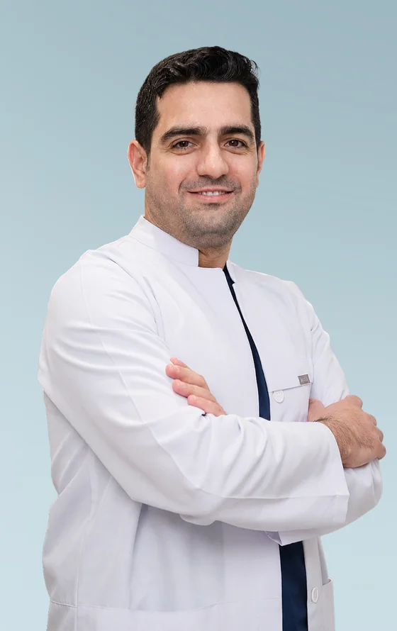
Medizinischer Direktor mit Schwerpunkt Haarrestauration, regenerative Medizin und operative Behandlungsplanung. Er verantwortet die medizinische Koordination von Planung, Eingriff und Nachsorge.
Patientenbericht: Nico, 37, aus Deutschland – von der ersten Recherche über die Klinikwahl und den Operationstag bis zur ersten Haarwäsche.
YouTube wird erst nach Klick geladen; dabei wird eine Verbindung zu Google Ireland Ltd. hergestellt.
Patientenstimme aus Deutschland
Nico, 37, aus Deutschland wählte Hermest nach eigenem Klinikvergleich. Im Video erzählt er, wie er Eingriff und Nachsorge erlebt hat.
Patientenbeispiele
Zu jedem Fall sind Methode, Graftzahl und Zeitraum angegeben.
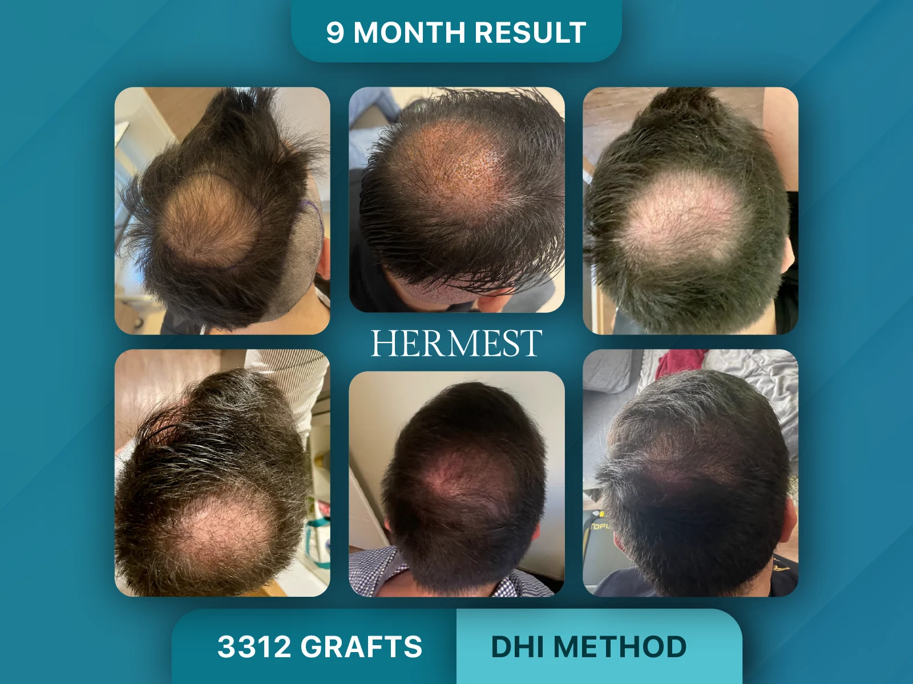
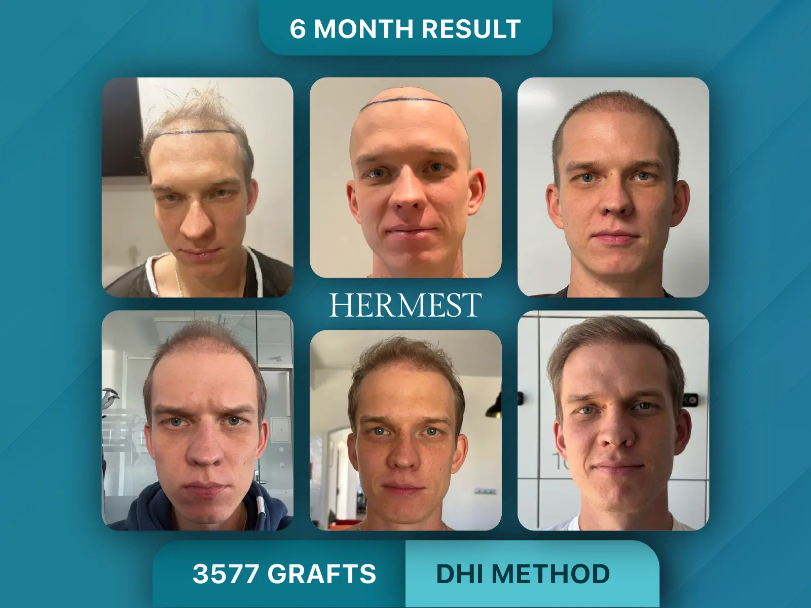
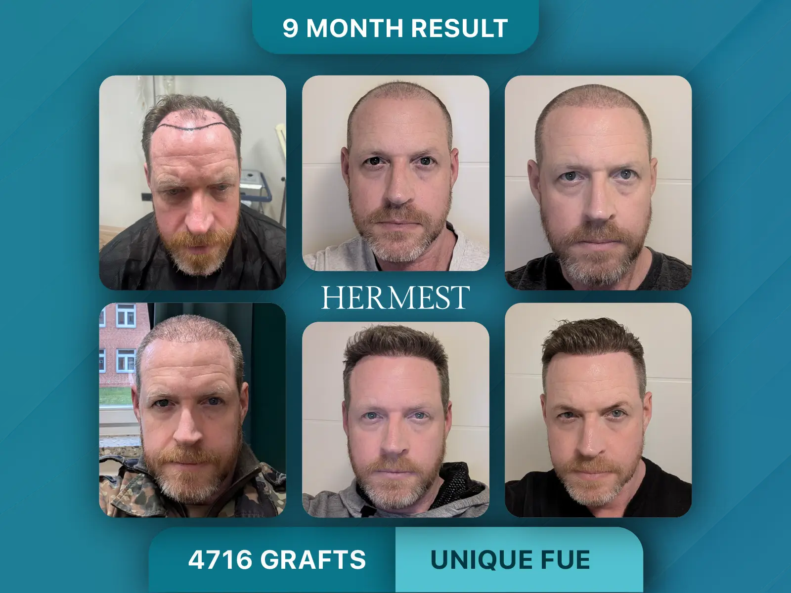
Senden Sie fünf Fotos. Sie erhalten eine Einschätzung zu Methode, Graftzahl und Paketpreis.
Methoden
Wir arbeiten mit mehreren Varianten der Haartransplantation. Welche Methode passt, zeigt die Haaranalyse.
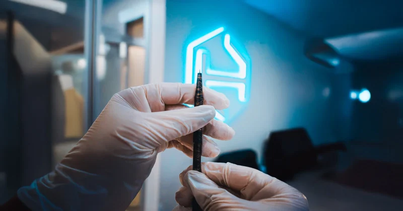
Die von Hermest entwickelte FUE-Variante mit besonderem Fokus auf Haarlinienplanung, Entnahmestrategie und Dichte.
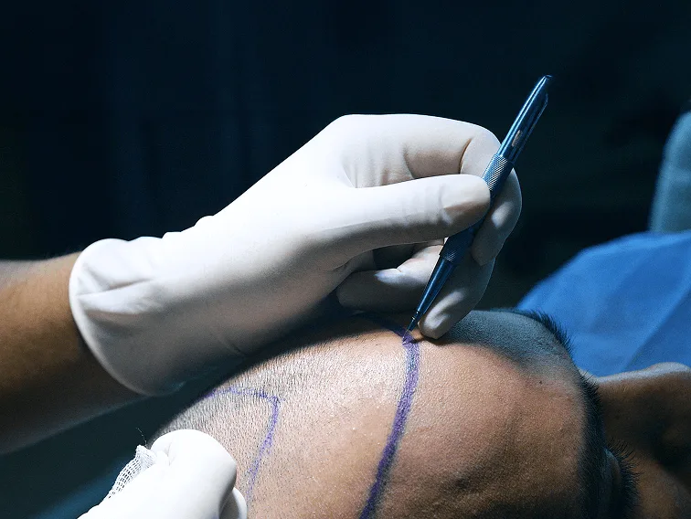
Kann bei größeren Behandlungsarealen eingesetzt werden, wenn Entnahme, Kanalplanung und Implantation präzise aufeinander abgestimmt werden sollen.
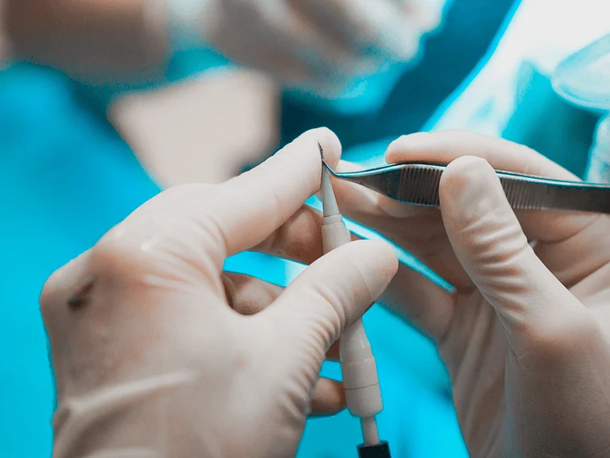
Direkte Implantation mit Choi-Implanter; kann insbesondere bei detaillierter Dichte- und Winkelplanung sinnvoll sein.
| Methode | Charakter | Dauer des Eingriffs | Erholungszeit | Typische Klärungsfrage |
|---|---|---|---|---|
| FUE / Sapphire FUE | Einzelentnahme, geplante Kanalöffnung und Implantation | 6–8 Stunden | 7–10 Tage | Wie viele Grafts sind im Spenderbereich sinnvoll? |
| DHI | Direkte Implantation mit Choi-Implanter | 6–8 Stunden | 7–10 Tage | Welche Dichte ist bei meiner Ausgangslage realistisch? |
| Ohne Rasur / Langhaar | Diskretere Planung bei geeigneter Ausgangslage | 6–8 Stunden | 7–10 Tage | Lässt sich der Entnahmebereich unauffällig abdecken? |
Ablauf
So läuft die Behandlung bei Hermest ab: von Analyse und Reiseplanung bis zur 12-monatigen Nachsorge.
Wir analysieren Ihre Fotos und planen Behandlung, Hotel, VIP-Transfers und Aufenthalt.
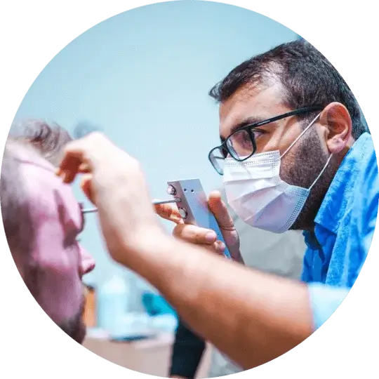
02Im persönlichen Gespräch werden Haarlinie, Graftstrategie und Methode final festgelegt.
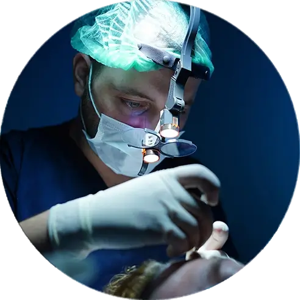
03Schonende Entnahme und dichte FUE-/DHI-Implantation unter medizinischer Aufsicht.
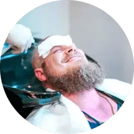
04Am Tag danach werden Verbände entfernt; der Arzt kontrolliert Heilung und Pflegeplan.
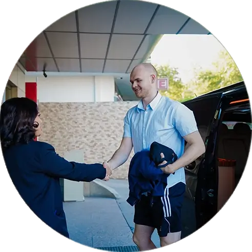
05Der VIP-Transfer bringt Sie zum Flughafen; Pflegehinweise und Kontaktwege sind vorbereitet.
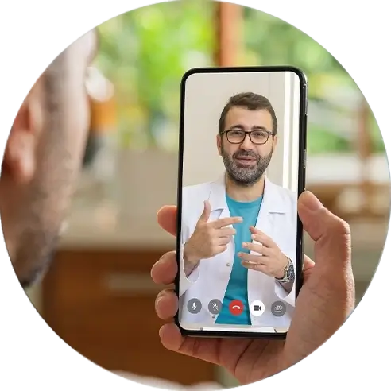
06Das Team begleitet den Verlauf mit Foto-Updates und dermatologischer Nachsorge für ein Jahr.
Ihr Aufenthalt
Hotel und Transfers sind feste Paketbestandteile und werden vor der Reise abgestimmt.
Zwei Übernachtungen inklusive Frühstück in Kliniknähe. Eine Unterbringung der Begleitperson im selben Zimmer ist je nach Buchung möglich.
Die Behandlung findet am festen Standort der Hermest Hair Clinic in Kadıköy auf der asiatischen Seite Istanbuls statt.
Kosten
Der endgültige Preis wird nach der kostenlosen Haaranalyse anhand Ihres Behandlungsplans festgelegt.
Im Preis enthalten
Die konkrete Paketvariante wird vor Buchung schriftlich bestätigt.
Nach Sichtung Ihrer Fotos erhalten Sie ein schriftliches Angebot mit Graftzahl und Paketpreis – unverbindlich.
Klinik & Team
Einblicke in die Hermest Hair Clinic in Kadıköy, Istanbul.
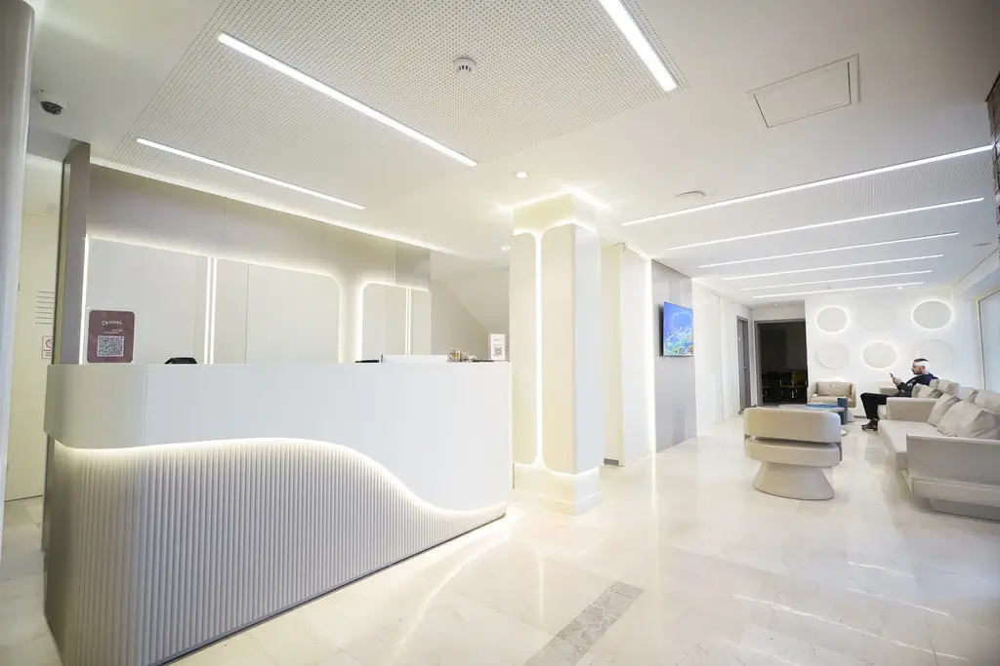
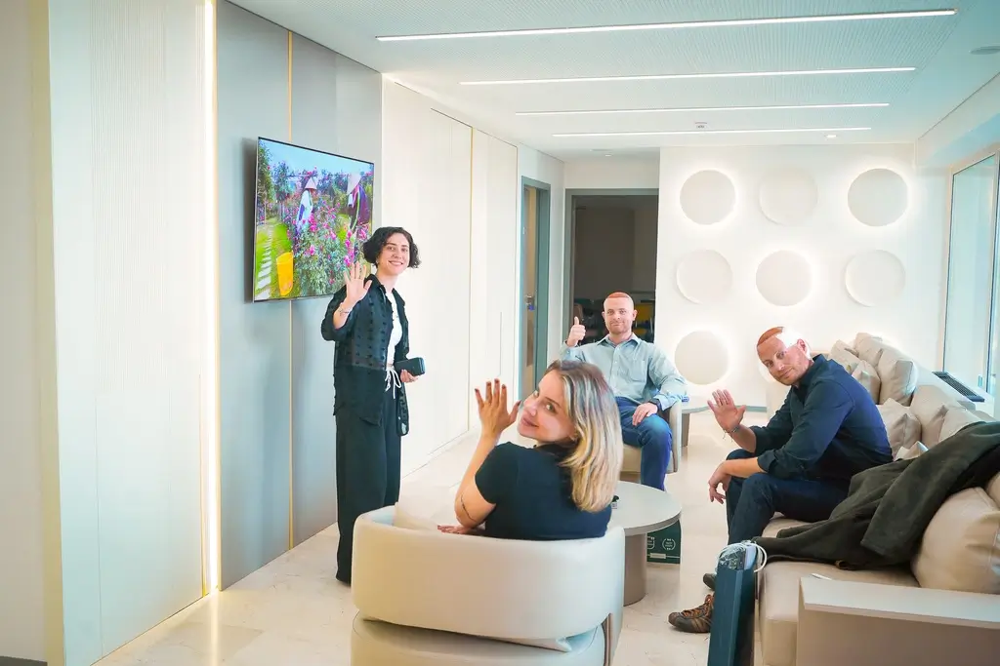
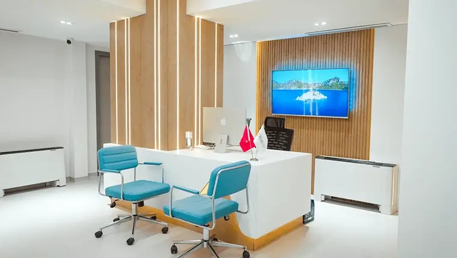
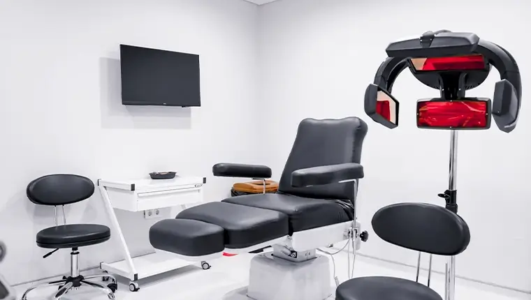
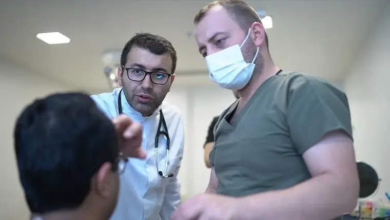
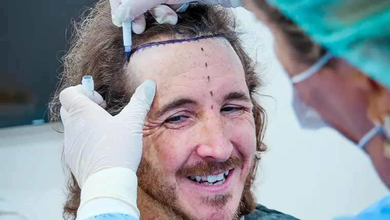
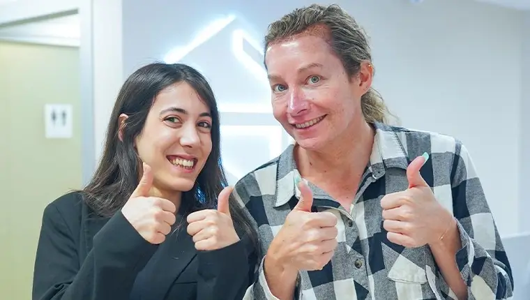
Redaktionell gekürzte Zusammenfassungen öffentlich einsehbarer Trustpilot-Bewertungen mit DE-Kennzeichnung.
Guter Erstkontakt, schneller Austausch, vertrauenswürdiger Eindruck.
Reibungsloser Ablauf; die deutschsprachige Kommunikation wird positiv erwähnt.
Realistische Beratung ohne überzogene Versprechen.
Klare Erklärungen vor dem Eingriff, Pflegehinweise und Begleitung in der Heilungsphase.
Presse & Bewertungen
Deutsche Medien und Pressespiegel, in denen Hermest geführt wird.
Häufige Fragen
Kosten, Reisedauer, Methodenwahl, Heilungsverlauf und Nachsorge: die wichtigsten Antworten vor der Anfrage.
Viele Patienten vergleichen medizinische Erfahrung, Gesamtkosten, Organisation und Nachsorge. Istanbul bietet dafür viele spezialisierte Kliniken.
Ja. Hermest ist durch das türkische Gesundheitsministerium zugelassen und zusätzlich im Bereich Gesundheitstourismus zertifiziert. Die entsprechenden Nachweise können Sie im Beratungsgespräch jederzeit anfordern.
Die Pakete beginnen bei 2.890 Euro für Sapphire FUE, 3.490 Euro für DHI und 4.250 Euro für Unique FUE®, jeweils all-inclusive bis zu 4.000 Grafts. Der für Sie geltende Paketpreis wird nach der individuellen Haaranalyse im persönlichen Angebot festgehalten.
Planen Sie in der Regel 2–3 Tage ein. Darin enthalten sind Anreise, Voruntersuchung, Behandlung, erste Haarwäsche, Kontrolle und die Abreise mit Ihren Pflegeanweisungen.
In der Regel 6–8 Stunden. Bei sehr hohen Graftzahlen kann der Eingriff bis zu 9 Stunden dauern – mit Pausen, in denen Sie essen und sich ausruhen können.
FUE wird häufig bei größeren Arealen eingesetzt, DHI bei detaillierter Dichte- und Winkelplanung. Die Entscheidung fällt nach Fotoanalyse.
Transplantierte Haare können nach 2–4 Wochen vorübergehend ausfallen. Erste sichtbare Entwicklungen zeigen sich oft nach einigen Monaten, das endgültige Ergebnis wird meist nach 8–12 Monaten beurteilt.
Die lokale Betäubung soll Schmerzen während des Eingriffs reduzieren; Comfort-in™ wird dabei zur komfortableren Verabreichung eingesetzt. Wie die Behandlung empfunden wird, ist individuell unterschiedlich.
Operation, 2 Nächte Unterkunft, VIP-Transfers, deutschsprachige Koordination, Medikamente und die Nachsorge über 12 Monate. Den genauen Umfang Ihres Pakets bestätigen wir Ihnen vor der Buchung schriftlich.
Ja, wir bieten Behandlungen ohne Rasur sowie Langhaar-Varianten an. Ob das in Ihrem Fall medizinisch und praktisch sinnvoll ist, hängt von Haardichte, Haarlänge, Empfängerbereich und Entnahmeplanung ab.
Bitte senden Sie scharfe Fotos von vorne, beiden Seiten, Oberkopf, Haarlinie und Spenderbereich bei gutem Licht.
Büroarbeit ist je nach Verlauf oft früher möglich als körperlich belastende Arbeit. Planen Sie sichtbare Rötung, Krustenbildung und Schonung ein.
Schreiben Sie uns direkt. Eine deutschsprachige Ansprechperson meldet sich bei Ihnen.
Anfrage
Senden Sie Ihre Kontaktdaten und eine kurze Beschreibung Ihrer Haarsituation. Danach erhalten Sie den Upload-Link für Ihre Fotos.
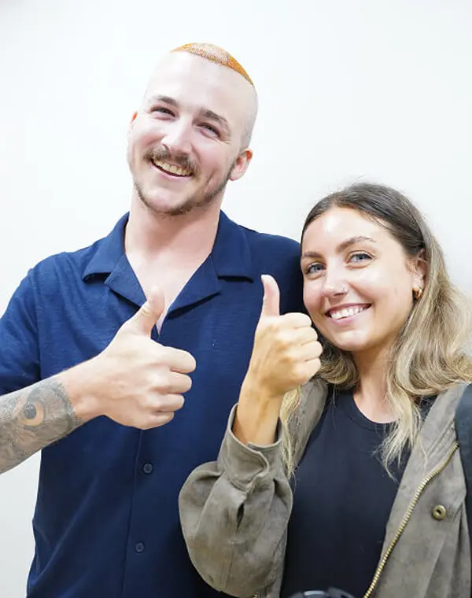